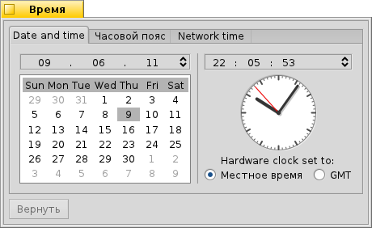
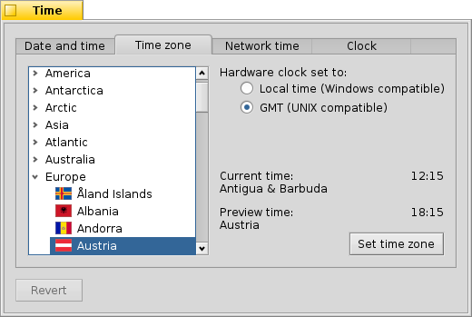
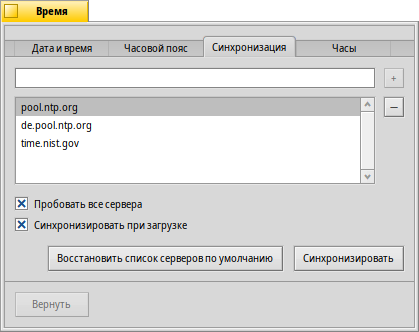
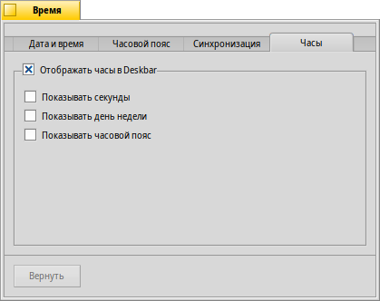

Время (Time)
Время (Time)
| Расположение в Deskbar: | ||
| Расположение в Tracker: | /boot/system/preferences/Time | |
| Настройки хранятся по адресу: | ~/config/settings/networktime settings - Все настройки, касающиеся синхронизации времени по сети ~/config/settings/RTC_time_settings - Настройка аппаратных часов (местное время или GMT) ~/config/settings/Time settings - Текущий часовой пояс ~/config/settings/Time_preflet_window - Координаты окна и т. д. |
Панель настроек Времени (Time) разделена на четыре вкладки:
 Дата и время
Дата и время

В левой части вы можете установить день месяца, кликнув по нему в календаре. Смена месяца и года производится стрелками вверх/вниз на клавиатуре, после щелчка на них мышью.
Точно так же справа меняется время. Кроме того, можно просто передвигать стрелки часов вручную.
Часовой пояс

Для установки часового пояса найдите и выберите свою страну в списке континентов и нажмите . Для стран более чем с одним часовым поясом нужно раскрыть еще один уровень меню. В правой части окна показывается время текущего и выбранного часовых поясов.
Справа также расположены настройки аппаратных часов вашего компьютера. Для них есть два режима:
| отображать местное время, что нужно, если у вас также установлена Windows. | ||
| отображать среднее время по гринвичскому меридиану, совместимое с UNIX. |
Синхронизация
Если у вас есть доступ в интернет, установку даты и времени вручную можно считать устаревшей. Существуют общедоступные сервера, предоставляющие очень точные сигналы времени.
С помощью кнопок / можно добавлять в список и убирать из него NTP-сервера.
Флажки ниже указывают системе при синхронизации, а не только выбранный, и , дабы вы всегда могли быть уверены, что ваши часы показывают верное время.
Вы можете , если вы случайно удалили рабочие NTP-сервера и часы вручную. Синхронизацию можно также запустить из командной строки (или скриптом):
Time --update
Часы

Последняя вкладка показывает настройки часов, отображаемых в Deskbar. Верхняя опция полностью отключает отображение часов. Названия остальных говорят сами за себя.
На каждой вкладке есть кнопка , которая возвращает настройки, активные на момент запуска панели настроек Время.